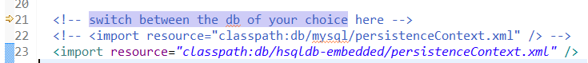
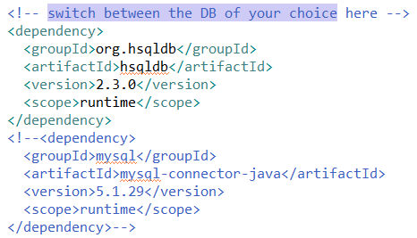
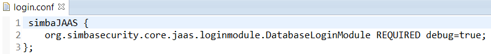

Adapt Simba for your project
Let's zoom in on our reference implementation since it will serve as a starting point.
Database
You can choose your preferred DB by:
- Importing the correct persistenceContext in the spring file. 
- Selecting the correct dependency in ri and parent pom. 
JAAS
You can choose your preferred JAAS login module by specifying the correct login module in the login.conf file:


CORS
The web.xml contains a piece of CORS configuration. Please don't forget to specify your manager domains here: